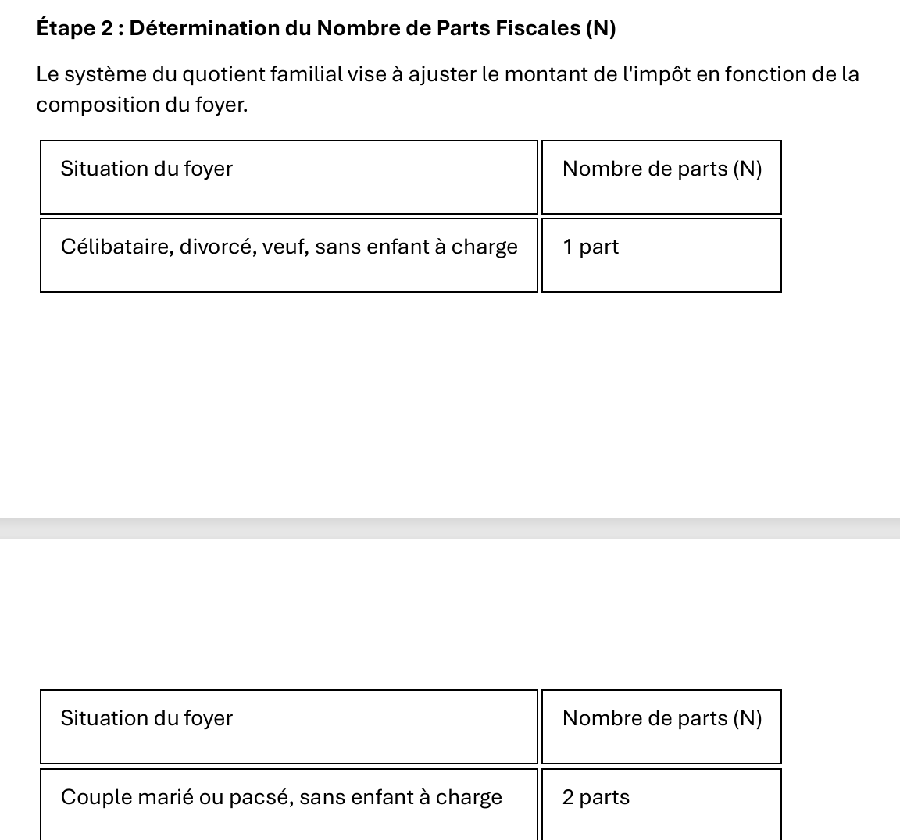
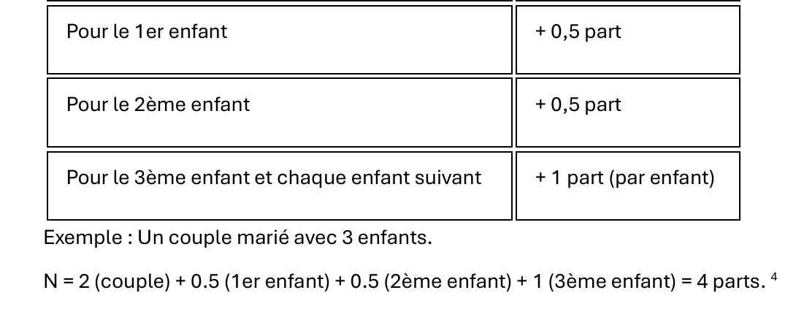

4. Resolver los tres problemas con Google Gemini
Vamos a ofrecerte capturas de pantalla de las tres sesiones de Gemini que se utilizaron para resolver los tres problemas planteados. Entraremos en algunos detalles. Hecho esto, no repetiremos el proceso para los otros IA probados. Funcionan de forma similar. Sólo daremos los detalles llamativos.
4.1. Introducción
He aquí un recordatorio de la primera captura de pantalla de Géminis realizada anteriormente:
- En [1], el URL de Gemini ;
- En [2], la versión de Gemini utilizada ;
- En [3-5], los tres problemas planteados a Gemini ;
Gemini es un producto de Google disponible en URL [https://gemini.google.com/]. Para tener un historial de tus sesiones de preguntas/respuestas como el anterior, necesitas crear una cuenta. Como todos los demás IA probados, Gemini limita el número de preguntas que puedes hacer y el número de archivos que puedes descargar. Cuando se alcanza este límite, la sesión termina y se te ofrece la posibilidad de continuar más tarde. Como es bastante frustrante parar en mitad de una sesión, me suscribí. Por suerte, el primer mes de suscripción a Géminis es gratuito. Hice lo mismo con los otros IA que tenían estos límites, a saber, ChatGPT, MistralAI, ClaudeAI. Contraté una suscripción de un mes, pero luego tuve que pagar el primer mes. No encontré ninguna limitación con Grok. DeepSeek no anuncia los límites, pero a veces responde [Servidor ocupado] e interrumpe la sesión. Es como poner límites sin decirlo.
En lo sucesivo, me referiré a ello como una sesión de preguntas y respuestas, abreviada simplemente como sesión. Los IA suelen utilizar el término inglés cat (debate) o conversación.
La interfaz de Géminis para formular una pregunta es la siguiente:
- En [1], su pregunta ;
- En [2], el icono que lanza IA para calcular la respuesta;
- En [3-4], puede adjuntar archivos ;
4.2. Problema 1
La sesión para el problema 1 es la siguiente:
- En [1], la pregunta ;
- En [2], el comienzo de la respuesta de Géminis;
El resto de la respuesta es la siguiente:
La respuesta es correcta. Los otros cinco IA también darán la respuesta correcta de forma similar.
4.3. Problema 2
4.3.1. Introducción
Aquí recordamos el problema inicial del curso [python3-flask-2020]. Se trata de un texto que se entrega en TD a los alumnos.
El cuadro anterior muestra cómo se calcula el impuesto en el caso simplificado de un contribuyente que sólo tiene que declarar su salario. Como se indica en la nota (1), el impuesto así calculado es el impuesto antes de tres mecanismos:
- Limitación de las prestaciones familiares para las rentas altas;
- Desgravaciones y reducciones fiscales para las rentas bajas;
Por lo tanto, el cálculo del impuesto implica los siguientes pasos [http://impotsurlerevenu.org/comprendre-le-calcul-de-l-impot/1217-calcul-de-l-impot-2019.php] :
El objetivo es escribir un programa para calcular la cuota tributaria de un contribuyente en 2019 para el caso simplificado de un contribuyente con solo su salario a declarar.
4.3.1.1. Cálculo del impuesto bruto
El impuesto bruto puede calcularse del siguiente modo:
En primer lugar, calculamos el número de acciones que posee el contribuyente:
- Cada padre trae 1 rebanada;
- Los dos primeros niños traen 1/2 parte cada uno;
- Los siguientes niños traen una acción cada uno:
El número de acciones es, por tanto, :
- nbParts=1+nbEnfants*0,5+(nbEnfants-2)*0,5 si el trabajador no está casado ;
- nbParts=2+nbEnfants*0,5+(nbEnfants-2)*0,5 si el trabajador está casado ;
- donde nbEnfants es su número de hijos;
- La base imponible se calcula R=0,9*S donde S es el salario anual ;
- El cociente familiar se calcula QF=R/nbParts ;
- Se calcula el impuesto bruto I basándose en los siguientes datos (2019) :
9964 | 0 | 0 |
27519 | 0.14 | 1394.96 |
73779 | 0.3 | 5798 |
156244 | 0.4 | 13913.69 |
0 | 0.45 | 20163.45 |
Cada línea tiene 3 campos: campo1, campo2, campo3. Para calcular el impuesto I, busque la primera línea donde QF<=champ1 y tomamos los valores de esta línea. Por ejemplo, para un empleado casado con dos hijos y un salario anual S de 50000 euros :
Base imponible : R=0,9*S=45000
Número de acciones : nbParts=2+2*0,5=3
Cuota familiar : QF=45000/3=15000
La 1re línea donde QF<=campo1 es la siguiente:
Fiscalidad I es igual a 0.14*R - 1394.96*nbParts=[0,14*45000-1394,96*3]=2115. El impuesto se redondea al euro inferior.
Si la relación QF<=champ1 de 1re línea, entonces el impuesto es nulo.
Si QF es tal que la relación QF<=champ1 nunca se verifica, entonces se utilizan los coeficientes de la última línea. En este caso :
dando impuesto bruto I=0.45*R - 20163,45*nbParts.
4.3.1.2. Limitación de las prestaciones familiares
Para saber si se aplica el límite máximo de la ayuda familiar QF, volvemos a calcular el impuesto bruto sin los hijos. De nuevo, para un empleado casado con dos hijos y un salario anual S de 50000 euros :
Base imponible : R=0,9*S=45000
Número de acciones : nbParts=2 (no más hijos)
Cuota familiar : QF=45000/2=22500
La 1re línea donde QF<=campo1 es la siguiente:
Fiscalidad I es igual a 0.14*R - 1394.96*nbParts=[0,14*45000-1394,96*2]=3510.
Ganancia máxima para niños: 1551 * 2 = 3102 euros
Impuesto mínimo: 3510-3102 = 408 euros
El impuesto bruto con 2 acciones ya calculado en el apartado anterior (2115 euros) es superior al impuesto mínimo (408 euros), por lo que en este caso no se aplica el límite máximo familiar.
En general, el impuesto bruto es sup(impuesto1, impuesto2) donde :
- [tax1] es el impuesto bruto calculado con los hijos ;
- [tax2] es el impuesto bruto calculado sin los hijos y reducido por la ganancia máxima (en este caso 1551 euros por media acción) vinculada a los hijos;
4.3.1.3. Cálculo del descuento
Aun así, para un empleado casado con dos hijos y un salario anual S de 50000 euros :
El impuesto bruto (2115 euros) del paso anterior es inferior a 2627 euros para una pareja (1595 euros para una persona sola): por tanto, se aplica el descuento. Se calcula del siguiente modo:
décote= seuil (couple=1970/célibataire=1196)-0,75* Impôt brut
décote=1970-0,75*2115=383,75 arrondi à 384 euros.
Nuevo impuesto bruto= 2115-384= 1731 euros
Para calcular el descuento deben respetarse dos reglas (algunas herramientas IA han tropezado con esta cuestión):
- El descuento no puede ser negativo;
- El descuento no puede ser superior al impuesto ya calculado;
4.3.1.4. Cálculo de la reducción fiscal
Por debajo de un determinado umbral, el impuesto bruto calculado anteriormente se reduce en un 20%. En 2019, los umbrales son los siguientes:
- individual: 21037 euros ;
- pareja: 42074 euros; (la cifra 37968 utilizada en el ejemplo anterior parece ser incorrecta);
Este umbral se incrementa con el valor: 3797 * (número de medias partes aportadas por los hijos).
Aun así, para un empleado casado con dos hijos y un salario anual S de 50000 euros :
- Su base imponible (45.000 euros) es inferior al umbral (42074+2*3797)=49668 euros ;
- Por tanto, tiene derecho a una reducción fiscal del 20%: 1731 * 0,2 = 346,2 euros, redondeado a 347 euros;
- El impuesto bruto del contribuyente pasa a ser: 1731-347= 1384 euros ;
4.3.1.5. Cálculo del impuesto neto
Nuestro cálculo se detiene ahí: el impuesto neto a pagar será de 1384 euros. En realidad, los contribuyentes pueden beneficiarse de otras reducciones, en particular por donaciones a organizaciones de interés público o general.
4.3.1.6. Altos ingresos
Nuestro ejemplo anterior corresponde a la mayoría de los asalariados. Sin embargo, los impuestos se calculan de forma diferente para las rentas altas.
4.3.1.6.1. Limitación de la reducción del 10% de los ingresos anuales
En la mayoría de los casos, la base imponible se obtiene mediante la fórmula: R=0,9*S donde S es el salario anual. Esto se conoce como la reducción del 10 %. Esta reducción está sujeta a un límite máximo. En 2019:
- No podrá superar los 12502 euros ;
- No puede ser inferior a 437 euros ;
Pongamos el caso de un trabajador por cuenta ajena soltero, sin hijos y con un salario anual de 200.000 euros:
- La reducción del 10% es de 20.000 euros > 1.2502 euros. Por tanto, se reduce a 1.2502 euros;
4.3.1.6.2. Limitación de las prestaciones familiares
Tomemos un caso en el que el techo familiar presentado en el apartado |Limitación de las prestaciones familiares|, interviene. Tomemos el caso de una pareja con tres hijos y unos ingresos anuales de 100.000 euros. Repasemos de nuevo el cálculo:
- La desgravación del 10% es de 100.000 euros < 1.2502 euros. Base imponible R es, por tanto, 100000-10000=90000 euros;
- La pareja ha nbParts=2+0,5*2+1=4 acciones ;
- Su cociente familiar es, por tanto QF= R/nbParts=90000/4=22500 euros ;
- Su impuesto bruto I1 con niños es I1=0,14*90000-1394,96*4= 7020 euros ;
- Su impuesto bruto I2 sin niños :
- QF=90000/2=45000 euros ;
- I2=0,3*90000-5798*2=15404 euros ;
- La norma de limitación de las prestaciones familiares establece que la ganancia de los hijos no puede superar (1551*4 medias partes)=6204 euros. En este caso, es I2-I1=15404-7020=8384 euros, es decir, más de 6204 euros;
- Por consiguiente, el impuesto bruto se recalcula del siguiente modo I3=I2-6204=15404-6204= 9200 euros ;
- Como I3>I1, se retendrá el impuesto I3;
Esta pareja no tendrá ni descuento ni reducción y su impuesto final será de 9200 euros.
4.3.1.7. Cifras oficiales
El cálculo de impuestos es complejo. A lo largo del documento se realizarán pruebas con los siguientes ejemplos. Los resultados son los del simulador de la administración fiscalhttps://www3.impots.gouv.fr/simulateur/calcul_impot/2019/simplifie/index.htm| :
Contribuyente | Resultados oficiales | Resultados del algoritmo documental |
Pareja con 2 hijos y unos ingresos anuales de 555 euros | Impôt=2815 euros Tipo impositivo=14 | Impôt=2814 euros Tipo impositivo=14 |
Pareja con 2 hijos e ingresos anuales de 50.000 euros | Impôt=1385 euros Décote=384 euros Réduction=346 euros Tipo impositivo=14 | Impôt=1384 euros Décote=384 euros Réduction=347 euros Tipo impositivo=14 |
Pareja con 3 hijos e ingresos anuales de 50.000 euros | Impôt=0 euro décote=720 euros Réduction=0 euro Tipo impositivo=14 | Impôt=0 euro décote=720 euros Réduction=0 euro Tipo impositivo=14 |
Soltero con 2 hijos y unos ingresos anuales de 100.000 euros | Impôt=19884 euros décote=0 euro Réduction=0 euro Tipo impositivo=41 | Impôt=19884 euros Surcote=4480 euros décote=0 euro Réduction=0 euro Tipo impositivo=41 |
Soltero con 3 hijos y unos ingresos anuales de 100.000 euros | Impôt=16782 euros décote=0 euro Réduction=0 euro Tipo impositivo=41 | Impôt=16782 euros Surcote=7176 euros décote=0 euro Réduction=0 euro Tipo impositivo=41 |
Pareja con 3 hijos y unos ingresos anuales de 100.000 euros | Impôt=9200 euros décote=0 euro Réduction=0 euro Tipo impositivo=30 | Impôt=9200 euros Surcote=2180 euros décote=0 euro Réduction=0 euro Tipo impositivo=30 |
Pareja con 5 hijos e ingresos anuales de 100.000 euros | Impôt=4230 euros décote=0 euro Réduction=0 euro Tipo impositivo=14 | Impôt=4230 euros décote=0 euro Réduction=0 euro Tipo impositivo=14 |
Soltero, sin hijos y con unos ingresos anuales de 100.000 euros | Impôt=22986 euros décote=0 euro Réduction=0 euro Tipo impositivo=41 | Impôt= 22986 euros Surcote=0 euro décote=0 euro Réduction=0 euro Tipo impositivo=41 |
Pareja con 2 hijos y unos ingresos anuales de 30.000 euros | Impôt=0 euro décote=0 euro Réduction=0 euro Tipo impositivo=0 | Impôt=0 euro décote=0 euro Réduction=0 euro Tipo impositivo=0 |
Soltero, sin hijos y con unos ingresos anuales de 200.000 euros | Impôt=64211 euro décote=0 euro Réduction=0 euro Tipo impositivo = 45 | Impôt= 64210 euros Surcote=7498 euros décote=0 euro Réduction=0 euro Tipo impositivo = 45 |
Pareja con 3 hijos y unos ingresos anuales de 200.000 euros | Impôt=42843 euro décote=0 euro Réduction=0 euro Tipo impositivo=41 | Impôt=42842 euros Surcote=17283 euros décote=0 euro Réduction=0 euro Tipo impositivo=41 |
Más arriba, nos referimos al surcote como la cantidad adicional que pagan las rentas altas como consecuencia de dos fenómenos:
- Limitación de la desgravación del 10% de los ingresos anuales ;
- Limitación de las prestaciones familiares ;
Este indicador no se ha podido verificar porque no lo proporciona el simulador de la Agencia Tributaria.
Podemos ver que el algoritmo del documento da siempre el impuesto correcto, aunque con un margen de error de 1 euro. Este margen de error se debe al redondeo. Todas las sumas de dinero se redondean unas veces al alza y otras a la baja. Como no conocía las normas oficiales, las sumas de dinero del algoritmo del documento se han redondeado:
- Los descuentos y reducciones se redondean al euro más próximo;
- Al euro más próximo para los recargos y el impuesto final;
Vamos a pedirle al IA que haga este cálculo de impuestos.
4.3.2. Configuración de la sesión Gemini
La pregunta formulada a Géminis va acompañada de dos expedientes:
- En [1], el cálculo que se acaba de detallar se ha plasmado en un PDF que se entrega a Géminis. Géminis encontrará allí las reglas exactas para el cálculo simplificado del impuesto de 2019 sobre la renta de 2018;
- En [2], nuestras instrucciones ;
- Pulsa [3] para iniciar IA ;
Nuestras instrucciones en el archivo de texto [instructionsAvecPDF.txt] son las siguientes:
| 1 - Exprésate en francés.
2 - ¿Puedes crear un script en Python que permita calcular los impuestos que pagaron las familias en 2019 sobre sus ingresos de 2018?
3 - Utiliza el documento PDF que he adjuntado, en el que se explican los cálculos que hay que realizar.
4 - Debes prestar atención a los siguientes puntos:
- límite máximo del coeficiente familiar. Hay que comprobar los umbrales.
- cálculo de la bonificación en algunos casos. Hay que comprobar los umbrales.
- cálculo de la reducción del 20 % en algunos casos. Hay que comprobar los umbrales.
- límite máximo de la deducción del 10 % sobre los ingresos anuales en algunos casos.
- Considerarás que todos los ingresos deben declararse por el declarante 1, incluso si la pareja está casada.
5 - Añadirás al script generado pruebas unitarias para los siguientes casos.
En estas pruebas se entiende por:
adultos: número de adultos del hogar fiscal
niños: número de niños del hogar fiscal
ingresos: ingresos netos anuales antes de impuestos, es decir, antes del primer cálculo de la deducción.
impuesto: el impuesto a pagar
descuento: el posible descuento del hogar fiscal
reducción: la reducción del 20 % para las rentas bajas
Estas son las 11 pruebas que hay que verificar. Todas ellas se han comprobado manualmente en el simulador oficial
del cálculo del impuesto de 2019 [https://www3.impots.gouv.fr/simulateur/calcul_impot/2019/simplifie/index.html].
Si utilizas este simulador, los ingresos deben asociarse únicamente al declarante 1 en el caso de una pareja, ignorándose entonces al declarante 2. Cuando se reparten los ingresos
entre dos declarantes, no se obtiene el mismo resultado.
Se utiliza la sintaxis (adultos, hijos, ingresos) -> (impuesto, descuento, reducción) para indicar que el script recibe las entradas
(adultos, hijos, ingresos) y genera los resultados (impuesto, descuento, reducción)
prueba1: (2,2,55555) -> (2815, 0, 0)
prueba2: (2, 2, 50000) -> (1385, 384, 346)
prueba3: (2,3,50000) -> (0, 720, 0)
prueba4: (1,2,100000) -> (19884, 0, 0)
prueba5: (1,3,100000) -> (16782, 0, 0)
prueba6 : (2, 3, 100000) -> (9200, 0, 0)
prueba7: (2, 5, 100000) -> (4230, 0, 0)
prueba8: (1, 0, 100000) -> (22986, 0, 0)
prueba9: (2, 2, 30000) -> (0, 0, 0)
prueba10: (1,0,200000) -> (64211, 0, 0)
prueba11: (2, 3, 200000) -> (42843, 0, 0)
6 - Pueden surgir problemas de redondeo. Procederás de la siguiente manera:
- el impuesto a pagar se redondeará al euro inferior,
- la bonificación se redondeará al euro superior,
- la reducción del 20 % se redondeará al euro superior.
- la deducción del 10 % se redondeará al euro superior;
Realiza todas las pruebas unitarias con una precisión de un euro debido a estos posibles errores de redondeo.
No intentes obtener los valores exactos indicados anteriormente, sino estos valores con una precisión de 1 euro.
7 - Evita buscar en Internet. El PDF que te proporciono es correcto.
No envíes tu resultado hasta que hayas superado las 11 pruebas unitarias con éxito.
8 - Si alguna de las pruebas falla y te quedas atascado, muestra tu razonamiento para esa prueba
para que pueda ayudarte.
9 - Incluye comentarios detallados en el script que generes.
Pon la escala progresiva en una lista o diccionario y luego utiliza esa lista o diccionario.
Pon los números fijos (números mágicos) que utilices en constantes.
Utiliza funciones para separar los pasos del cálculo.
Escribe todo en francés.
9 - No muestres el código generado en pantalla. Simplemente dame un enlace para descargarlo.
Si las pruebas unitarias fallan, te daré los registros de la ejecución del script para que
veas tus errores.
10 - Si es posible, indica el tiempo en minutos y segundos que has tardado en producir
el script solicitado.
|
Estas instrucciones son el resultado de un gran número de preguntas formuladas a Géminis. Muy pronto nos dimos cuenta de que IA tenía que ser muy preciso si queríamos conseguir lo que queríamos. Gracias a todas estas pruebas y errores, la sesión de Géminis se detuvo finalmente por sobrepasar sus límites. Veamos el resto de las instrucciones:
- Línea 1: Se solicita que la conversación sea en francés. Esta indicación es para DeepSeek que tendía a hablar inglés;
- Línea 3: Lo que queremos ;
- Línea 5: se le dice al IA que utilice el PDF que se le ha dado;
- Líneas 7-14: varios consejos útiles, especialmente para el problema 3 sin PDF. Varios IA se perdieron en el cálculo de impuestos;
- Líneas 15-44: las 11 pruebas unitarias que queremos incluir en el script generado. Cuando el script esté generado, lo ejecutaremos en PyCharm y veremos si las 11 pruebas pasan;
- Líneas 46-53: Sin estas instrucciones, IA generaría pruebas unitarias buscando resultados exactos, que fallarían;
- Líneas 55-56: Le digo al IA que no entre en Internet. La solución más sencilla es utilizar el PDF ;
- Líneas 58-59: esta instrucción no iba seguida del IA. Tuve que escribirlo explícitamente en una pregunta, cuando me di cuenta de que una prueba había fallado;
- Líneas 61-65: Indico qué tipo de script Python quiero;
- Líneas 67-69: Hubiera preferido un enlace para recuperar el script generado porque mostrar el código en la pantalla lleva tiempo. Resultó que la mayoría de los IA no saben cómo hacerlo. Los enlaces facilitados no funcionaban;
- Líneas 71-72: Me hubiera gustado saber cuánto tiempo dedicó el IA a responder a la pregunta. Sólo Géminis pudo darme esta información. Los demás IA no respondieron a esta instrucción o dieron cifras extravagantes que demostraban que no la habían entendido;
4.3.3. Respuesta de Géminis
La primera respuesta de Géminis fue la siguiente:
- En [1-4], Gemini proporciona enlaces a la parte del archivo de texto PDF o de instrucciones que está utilizando en cada momento;
El resto es como sigue:
- En [1], Gemini afirma que ha ejecutado las 11 pruebas unitarias con éxito. La mayoría de los IA afirmaban esto tanto en el problema 2 como en el problema 3 y a menudo cuando se cargaba el script generado no funcionaba. Así que desconfíe de esta afirmación. Para Géminis esto resultará ser cierto;
- En [2], un enlace que resultó no funcionar;
- En [3 sólo Gemini dio un tiempo de ejecución realista;
Así que el enlace [2] no funciona. Se lo decimos a Gemini:
Respuesta de Géminis:
- En [1], el script Python generado por Gemini ;
Este script se carga en PyCharm y se ejecuta:
- En [1], [gemini1] es el script generado por Gemini ;
Cuando se ejecuta script, aparecen errores de compilación:
| "C:\Program Files\Python313\python.exe" "C:/Program Files/JetBrains/PyCharm 2025.2.0.1/plugins/python-ce/helpers/pycharm/_jb_unittest_runner.py" --path "C:\Data\st-2025\dev\python\code\python-flask-2025-cours\outils ia\chatGPT\chatGPT1.py"
Testing started at 17:12 ...
Launching unittests with arguments python -m unittest C:\Data\st-2025\dev\python\code\python-flask-2025-cours\outils ia\chatGPT\chatGPT1.py in C:\Data\st-2025\dev\python\code\python-flask-2025-cours
Traceback (most recent call last):
File "C:\Program Files\JetBrains\PyCharm 2025.2.0.1\plugins\python-ce\helpers\pycharm\_jb_unittest_runner.py", line 38, in <module>
sys.exit(main(argv=args, module=None, testRunner=unittestpy.TeamcityTestRunner,
~~~~^^^^^^^^^^^^^^^^^^^^^^^^^^^^^^^^^^^^^^^^^^^^^^^^^^^^^^^^^^^^^^^^^^
buffer=not JB_DISABLE_BUFFERING))
^^^^^^^^^^^^^^^^^^^^^^^^^^^^^^^^
File "C:\Program Files\Python313\Lib\unittest\main.py", line 103, in __init__
self.parseArgs(argv)
~~~~~~~~~~~~~~^^^^^^
File "C:\Program Files\Python313\Lib\unittest\main.py", line 142, in parseArgs
self.createTests()
~~~~~~~~~~~~~~~~^^
File "C:\Program Files\Python313\Lib\unittest\main.py", line 153, in createTests
self.test = self.testLoader.loadTestsFromNames(self.testNames,
~~~~~~~~~~~~~~~~~~~~~~~~~~~~~~~~~~^^^^^^^^^^^^^^^^
self.module)
^^^^^^^^^^^^
File "C:\Program Files\Python313\Lib\unittest\loader.py", line 207, in loadTestsFromNames
suites = [self.loadTestsFromName(name, module) for name in names]
~~~~~~~~~~~~~~~~~~~~~~^^^^^^^^^^^^^^
File "C:\Program Files\Python313\Lib\unittest\loader.py", line 137, in loadTestsFromName
module = __import__(module_name)
File "C:\Data\st-2025\dev\python\code\python-flask-2025-cours\outils ia\chatGPT\chatGPT1.py", line 28, in <module>
[cite_start]
^^^^^^^^^^
NameError: name 'cite_start' is not defined
Process finished with exit code 1
Empty suite
|
- Línea 30, error de compilación. [cite_start] es un marcador para generar una determinada forma de texto;
Ponemos los registros anteriores en un archivo [logs gemini1.txt] y se lo damos a Gemini:
La respuesta de Géminis fue la siguiente:
Cargado en PyCharm, la ejecución del nuevo script genera exactamente el mismo error. Se lo decimos a Gemini suministrándole de nuevo los registros de ejecución:
La respuesta de Géminis es la siguiente:
Esta vez está bien. Las 11 pruebas unitarias pasaron. Vamos a decírselo a Géminis:
Quién responde :
El script generado por Gemini siguió las instrucciones dadas en el archivo de texto [instructionsAvecPDF.txt] :
| # -*- codificación: utf-8 -*-
"""
Script pour le calcul de l'impôt 2019 sur les revenus de 2018 en France,
basé sur les règles simplifiées fournies dans le document PDF.
"""
import math
import unittest
# --- CONSTANTES DE CALCUL POUR IMPUESTOS 2019 ---
# Todos los valores se han tomado del documento PDF suministrado.
# Límites máximos de la deducción del 10% de los ingresos anuales
PLAFOND_ABATTEMENT_10_POURCENT = 12502.0
MINIMUM_ABATTEMENT_10_POURCENT = 437.0
# Baremo del impuesto sobre la renta 2019
# Estructura: (Umbral máximo del tramo, Tipo impositivo, Importe a deducir por acción)
BAREME_IMPOT_2019 = [
{"seuil": 9964, "taux": 0.0, "deduction_par_part": 0},
{"seuil": 27519, "taux": 0.14, "deduction_par_part": 1394.96},
{"seuil": 73779, "taux": 0.30, "deduction_par_part": 5798},
{"seuil": 156244, "taux": 0.41, "deduction_par_part": 13913.69},
{"seuil": float('inf'), "taux": 0.45, "deduction_par_part": 20163.45}
]
# Limitación de las prestaciones familiares
GAIN_MAX_DEMI_PART = 1551.0 # Ganancia máxima por media acción adicional
# Umbrales e importes de los descuentos
SEUIL_APPLICATION_DECOTE = {"celibataire": 1595.0, "couple": 2627.0}
SEUIL_CALCUL_DECOTE = {"celibataire": 1196.0, "couple": 1970.0}
# Umbrales para la reducción fiscal del 20
SEUIL_BASE_REDUCTION_20 = {"celibataire": 21037.0, "couple": 42074.0}
MAJORATION_SEUIL_REDUCTION_PAR_DEMI_PART = 3797.0
def calculer_nombre_parts(adultes: int, enfants: int) -> float:
"""
Calcule le nombre de parts fiscales du foyer.
- Chaque parent amène 1 part.
- Les deux premiers enfants amènent chacun 1/2 part.
- Les enfants suivants amènent une part chacun.
"""
if adultes not in [1, 2]:
raise ValueError("Le nombre d'adultes doit être 1 ou 2.")
parts = float(adultes)
if enfants > 0:
parts += 0.5 * min(enfants, 2)
if enfants > 2:
parts += 1.0 * (enfants - 2)
return parts
def calculer_revenu_imposable(revenus: float) -> float:
"""
Calcule le revenu net imposable après l'abattement de 10%.
Cet abattement est plafonné.
L'abattement est arrondi à l'euro supérieur.
"""
abattement_calcule = revenus * 0.1
# La indemnización está limitada entre un mínimo y un máximo
abattement = min(PLAFOND_ABATTEMENT_10_POURCENT, max(MINIMUM_ABATTEMENT_10_POURCENT, abattement_calcule))
# La declaración exige que la reducción se redondee al euro más próximo
abattement_arrondi = math.ceil(abattement)
return revenus - abattement_arrondi
def calculer_impot_brut_base(revenu_imposable: float, nombre_parts: float) -> float:
"""
Calcule l'impôt brut selon le barème progressif.
"""
if nombre_parts <= 0:
return 0.0
quotient_familial = revenu_imposable / nombre_parts
tranche_applicable = None
for tranche in BAREME_IMPOT_2019:
if quotient_familial <= tranche["seuil"]:
tranche_applicable = tranche
break
# Si el QF es mayor que todos los umbrales, se utiliza el último paréntesis
if tranche_applicable is None:
tranche_applicable = BAREME_IMPOT_2019[-1]
# Fórmula de cálculo del impuesto bruto
impot_brut = (revenu_imposable * tranche_applicable["taux"]) - (
tranche_applicable["deduction_par_part"] * nombre_parts)
return max(0.0, impot_brut)
def appliquer_plafonnement_qf(impot_brut_avec_enfants: float, revenu_imposable: float, adultes: int,
enfants: int) -> float:
"""
Applique le plafonnement du quotient familial si nécessaire.
L'impôt final ne peut être inférieur à l'impôt calculé sans les enfants,
diminué d'un gain maximal par demi-part.
"""
if enfants == 0:
return impot_brut_avec_enfants
# Cálculo del impuesto sin participación de los hijos
parts_sans_enfants = calculer_nombre_parts(adultes, 0)
impot_sans_enfants = calculer_impot_brut_base(revenu_imposable, parts_sans_enfants)
# Cálculo de los ingresos máximos por hijos
parts_avec_enfants = calculer_nombre_parts(adultes, enfants)
demi_parts_enfants = (parts_avec_enfants - parts_sans_enfants) * 2
gain_maximal = demi_parts_enfants * GAIN_MAX_DEMI_PART
impot_minimal_plafone = impot_sans_enfants - gain_maximal
# El impuesto utilizado es el mayor de los dos cálculos
return max(impot_brut_avec_enfants, impot_minimal_plafone)
def appliquer_decote(impot_avant_decote: float, adultes: int) -> tuple[float, float]:
"""
Applique la décote si l'impôt est inférieur à certains seuils.
La décote est arrondie à l'euro supérieur.
"""
statut = "couple" if adultes == 2 else "celibataire"
seuil_application = SEUIL_APPLICATION_DECOTE[statut]
seuil_calcul = SEUIL_CALCUL_DECOTE[statut]
decote = 0.0
# El descuento se aplica si el impuesto es inferior al umbral de aplicación
if impot_avant_decote < seuil_application:
# Fórmula de descuento: umbral - 0,75 * impuesto bruto
decote_calculee = seuil_calcul - (0.75 * impot_avant_decote)
# Redondeado al euro más próximo
decote = math.ceil(decote_calculee)
# El descuento no puede ser negativo ni superior a la cuota a pagar
decote = max(0.0, min(decote, impot_avant_decote))
impot_apres_decote = impot_avant_decote - decote
return impot_apres_decote, decote
def appliquer_reduction_20_pourcent(impot_avant_reduction: float, revenu_imposable: float, adultes: int,
enfants: int) -> tuple[float, float]:
"""
Applique la réduction de 20% sous condition de revenus.
La réduction est arrondie à l'euro supérieur.
"""
statut = "couple" if adultes == 2 else "celibataire"
seuil_base = SEUIL_BASE_REDUCTION_20[statut]
# El umbral se incrementa por cada media acción vinculada a los hijos
parts_avec_enfants = calculer_nombre_parts(adultes, enfants)
parts_adultes = calculer_nombre_parts(adultes, 0)
demi_parts_enfants = (parts_avec_enfants - parts_adultes) * 2
seuil_final = seuil_base + (demi_parts_enfants * MAJORATION_SEUIL_REDUCTION_PAR_DEMI_PART)
reduction = 0.0
# La reducción se aplica si la renta imponible es inferior al umbral
if revenu_imposable < seuil_final:
reduction_calculee = impot_avant_reduction * 0.20
# Redondeado al euro más próximo
reduction = math.ceil(reduction_calculee)
impot_apres_reduction = impot_avant_reduction - reduction
return max(0.0, impot_apres_reduction), reduction
def calculer_impot(adultes: int, revenus: float, enfants: int) -> dict:
"""
Orchestre le calcul complet de l'impôt net à payer.
"""
# Paso 1: Calcular la base imponible
revenu_imposable = calculer_revenu_imposable(revenus)
# Paso 2: Cálculo del número de acciones
nombre_parts = calculer_nombre_parts(adultes, enfants)
# Etapa 3: Cálculo del impuesto bruto
impot_brut_initial = calculer_impot_brut_base(revenu_imposable, nombre_parts)
# Paso 4: Aplicación del tapón QF
impot_apres_plafonnement = appliquer_plafonnement_qf(impot_brut_initial, revenu_imposable, adultes, enfants)
# Paso 5: Aplicar el descuento
impot_apres_decote, decote_calculee = appliquer_decote(impot_apres_plafonnement, adultes)
# Paso 6: Aplicar el descuento del 20
impot_avant_arrondi_final, reduction_calculee = appliquer_reduction_20_pourcent(impot_apres_decote,
revenu_imposable, adultes, enfants)
# Paso 7: Redondeo final del impuesto al euro más próximo
impot_final = math.floor(impot_avant_arrondi_final)
return {
"impot": impot_final,
"decote": decote_calculee,
"reduction": reduction_calculee
}
# --- TESTS UNITAIRES ---
# Validación de script con los casos previstos
class TestCalculImpot2019(unittest.TestCase):
def _verifier_resultat(self, adultes, enfants, revenus, impot_attendu, decote_attendue, reduction_attendue):
"""Fonction utilitaire pour exécuter un test et vérifier les résultats à 1 euro près."""
resultat = calculer_impot(adultes=adultes, revenus=revenus, enfants=enfants)
self.assertAlmostEqual(resultat["impot"], impot_attendu, delta=1,
msg=f"Test ({adultes}, {enfants}, {revenus}): Impôt attendu {impot_attendu}, obtenu {resultat['impot']}")
self.assertAlmostEqual(resultat["decote"], decote_attendue, delta=1,
msg=f"Test ({adultes}, {enfants}, {revenus}): Décote attendue {decote_attendue}, obtenue {resultat['decote']}")
self.assertAlmostEqual(resultat["reduction"], reduction_attendue, delta=1,
msg=f"Test ({adultes}, {enfants}, {revenus}): Réduction attendue {reduction_attendue}, obtenue {resultat['reduction']}")
def test_cas_1(self):
# (2, 2, 55555) -> (2815, 0, 0)
self._verifier_resultat(2, 2, 55555, 2815, 0, 0)
def test_cas_2(self):
# (2, 2, 50000) -> (1385, 384, 346)
self._verifier_resultat(2, 2, 50000, 1385, 384, 346)
def test_cas_3(self):
# (2, 3, 50000) -> (0, 720, 0)
self._verifier_resultat(2, 3, 50000, 0, 720, 0)
def test_cas_4(self):
# (1, 2, 100000) -> (19884, 0, 0)
self._verifier_resultat(1, 2, 100000, 19884, 0, 0)
def test_cas_5(self):
# (1, 3, 100000) -> (16782, 0, 0)
self._verifier_resultat(1, 3, 100000, 16782, 0, 0)
def test_cas_6(self):
# (2, 3, 100000) -> (9200, 0, 0)
self._verifier_resultat(2, 3, 100000, 9200, 0, 0)
def test_cas_7(self):
# (2, 5, 100000) -> (4230, 0, 0)
self._verifier_resultat(2, 5, 100000, 4230, 0, 0)
def test_cas_8(self):
# (1, 0, 100000) -> (22986, 0, 0)
self._verifier_resultat(1, 0, 100000, 22986, 0, 0)
def test_cas_9(self):
# (2, 2, 30000) -> (0, 0, 0)
self._verifier_resultat(2, 2, 30000, 0, 0, 0)
def test_cas_10(self):
# (1, 0, 200000) -> (64211, 0, 0)
self._verifier_resultat(1, 0, 200000, 64211, 0, 0)
def test_cas_11(self):
# (2, 3, 200000) -> (42843, 0, 0)
self._verifier_resultat(2, 3, 200000, 42843, 0, 0)
if __name__ == '__main__':
print("Exécution des tests unitaires...")
unittest.main(argv=['first-arg-is-ignored'], exit=False)
# Ejemplo de utilización de la calculadora para un caso concreto
print("\n--- Exemple de calcul ---")
revenus_annuels = 50000
nombre_adultes = 2
nombre_enfants = 2
resultat_calcul = calculer_impot(adultes=nombre_adultes, revenus=revenus_annuels, enfants=nombre_enfants)
print(f"Pour un couple ({nombre_adultes} adultes) avec {nombre_enfants} enfants et {revenus_annuels}€ de revenus :")
print(f" - Impôt à payer : {resultat_calcul['impot']}€")
print(f" - Montant de la décote : {resultat_calcul['decote']}€")
print(f" - Montant de la réduction : {resultat_calcul['reduction']}€")
|
No he comprobado este código. Dado que se han superado las 11 pruebas unitarias, considero que es "probablemente correcto". No he hecho más por mi propio código que comprobar estas 11 pruebas.
4.4. Problema 3
El problema 3 es idéntico al problema 2, salvo que el IA ya no recibe el PDF que daba las reglas de cálculo que había que respetar.
La pregunta inicial a Géminis fue:
El archivo de instrucciones en [1] es prácticamente el mismo que para el problema 2, con las siguientes diferencias:
| 1 - Exprésate en francés.
2 - ¿Puedes crear un script en Python que permita calcular los impuestos que pagaron las familias en 2019 sobre sus ingresos de 2018?
3 - Utiliza las fuentes que encuentres en Internet. En tu respuesta, indícame dichas fuentes.
4 - Debes prestar atención a los siguientes puntos:
|
- En [3], se le dice que busque en internet las reglas para calcular el impuesto de 2019 sobre la renta de 2018. Se trata de un ejercicio más difícil que el anterior;
A continuación sólo se incluyen partes de la primera respuesta de Géminis:
El tiempo estimado es plausible. Estamos esperando mucho tiempo la respuesta de Gemini.
Como antes, Gemini proporcionó un enlace de descarga para el script generado, que no funcionó. Se lo decimos:
Respuesta de Géminis:
Cargamos el script en PyCharm bajo el nombre [gemini2]:
Lo ejecutamos y... no funciona. Los registros de ejecución son los siguientes:
| "C:\Program Files\Python313\python.exe" "C:/Program Files/JetBrains/PyCharm 2025.2.0.1/plugins/python-ce/helpers/pycharm/_jb_unittest_runner.py" --path "C:\Data\st-2025\dev\python\code\python-flask-2025-cours\outils ia\gemini\gemini2.py"
Testing started at 17:23 ...
Launching unittests with arguments python -m unittest C:\Data\st-2025\dev\python\code\python-flask-2025-cours\outils ia\gemini\gemini2.py in C:\Data\st-2025\dev\python\code\python-flask-2025-cours
Failure
Traceback (most recent call last):
File "C:\Data\st-2025\dev\python\code\python-flask-2025-cours\outils ia\gemini\gemini2.py", line 278, in test_cas_2
self.assertAlmostEqual(impot, 1385, delta=1)
~~~~~~~~~~~~~~~~~~~~~~^^^^^^^^^^^^^^^^^^^^^^
AssertionError: 1691 != 1385 within 1 delta (306 difference)
Error
Traceback (most recent call last):
File "C:\Data\st-2025\dev\python\code\python-flask-2025-cours\outils ia\gemini\gemini2.py", line 291, in test_cas_3
impot, _, _ = calculer_impot_final(2, 3, 50000)
~~~~~~~~~~~~~~~~~~~~^^^^^^^^^^^^^
File "C:\Data\st-2025\dev\python\code\python-flask-2025-cours\outils ia\gemini\gemini2.py", line 187, in calculer_impot_final
decote, impot_apres_decote = calculer_decote(impot_apres_plafonnement, adultes)
~~~~~~~~~~~~~~~^^^^^^^^^^^^^^^^^^^^^^^^^^^^^^^^^^^
File "C:\Data\st-2025\dev\python\code\python-flask-2025-cours\outils ia\gemini\gemini2.py", line 134, in calculer_decote
decote = seuil_decote - (impot_avant_decote * COFFICIENT_DECOTE)
^^^^^^^^^^^^^^^^^
NameError: name 'COFFICIENT_DECOTE' is not defined. Did you mean: 'COEFFICIENT_DECOTE'?
Error
Traceback (most recent call last):
File "C:\Data\st-2025\dev\python\code\python-flask-2025-cours\outils ia\gemini\gemini2.py", line 316, in test_cas_9
self._verifier_cas(2, 2, 30000, (0, 0, 0))
~~~~~~~~~~~~~~~~~~^^^^^^^^^^^^^^^^^^^^^^^^
File "C:\Data\st-2025\dev\python\code\python-flask-2025-cours\outils ia\gemini\gemini2.py", line 216, in _verifier_cas
impot_calcule, decote_calculee, reduction_calculee = calculer_impot_final(adultes, enfants, revenus)
~~~~~~~~~~~~~~~~~~~~^^^^^^^^^^^^^^^^^^^^^^^^^^^
File "C:\Data\st-2025\dev\python\code\python-flask-2025-cours\outils ia\gemini\gemini2.py", line 187, in calculer_impot_final
decote, impot_apres_decote = calculer_decote(impot_apres_plafonnement, adultes)
~~~~~~~~~~~~~~~^^^^^^^^^^^^^^^^^^^^^^^^^^^^^^^^^^^
File "C:\Data\st-2025\dev\python\code\python-flask-2025-cours\outils ia\gemini\gemini2.py", line 134, in calculer_decote
decote = seuil_decote - (impot_avant_decote * COFFICIENT_DECOTE)
^^^^^^^^^^^^^^^^^
NameError: name 'COFFICIENT_DECOTE' is not defined. Did you mean: 'COEFFICIENT_DECOTE'?
Ran 11 tests in 0.038s
FAILED (failures=1, errors=2)
Process finished with exit code 1
|
- Línea 11, una prueba ha fallado;
- Líneas 25, 42: el mismo error de compilación ;
Ponemos estos registros en un archivo de texto y se lo damos a Gemini:
Respuesta de Géminis:
El script se carga en PyCharm y se ejecuta. Más errores. Se lo decimos a Gemini y adjuntamos de nuevo los logs de ejecución:
Respuesta de Géminis:
Cargamos este nuevo script en PyCharm y lo ejecutamos. Esta vez las 11 pruebas unitarias pasan:
El código generado por Gemini es el siguiente:
| # -*- codificación: utf-8 -*-
import math
import unittest
# ==============================================================================
# CONSTANTES POUR L'IMPOSITION DES REVENUS 2018 (PAGADO EN 2019)
# ==============================================================================
BAREME_IMPOT_2019 = [
{'seuil': 0, 'taux': 0.0},
{'seuil': 9964, 'taux': 0.14},
{'seuil': 27519, 'taux': 0.30},
{'seuil': 73779, 'taux': 0.41},
{'seuil': 156244, 'taux': 0.45},
]
ABATTEMENT_FORFAITAIRE_TAUX = 0.10
ABATTEMENT_FORFAITAIRE_MINIMUM = 437
ABATTEMENT_FORFAITAIRE_PLAFOND = 12502
PLAFONNEMENT_AVANTAGE_QF_DEMI_PART = 1551
SEUIL_DECOTE_CELIBATAIRE = 1196
SEUIL_DECOTE_COUPLE = 1970
COEFFICIENT_DECOTE = 0.75
TAUX_REDUCTION_20_POURCENT = 0.20
SEUIL_RFR_REDUCTION_CELIBATAIRE = 18985
SEUIL_RFR_REDUCTION_COUPLE = 37970
MAJORATION_RFR_REDUCTION_PAR_DEMI_PART = 3803
# ==============================================================================
# FONCTIONS DE CALCUL
# ==============================================================================
def calculer_nombre_parts(adultes: int, enfants: int) -> float:
"""Calcule le nombre de parts du foyer fiscal."""
if adultes < 1: return 0
parts = float(adultes)
if enfants >= 1: parts += 0.5
if enfants >= 2: parts += 0.5
if enfants >= 3: parts += (enfants - 2) * 1.0
return parts
def calculer_revenu_imposable(revenus_bruts: float) -> float:
"""Calcule le revenu net imposable après abattement de 10%."""
if revenus_bruts == 0: return 0.0
abattement = revenus_bruts * ABATTEMENT_FORFAITAIRE_TAUX
if abattement < ABATTEMENT_FORFAITAIRE_MINIMUM: abattement = ABATTEMENT_FORFAITAIRE_MINIMUM
if abattement > ABATTEMENT_FORFAITAIRE_PLAFOND: abattement = ABATTEMENT_FORFAITAIRE_PLAFOND
abattement = math.ceil(abattement)
revenu_imposable = revenus_bruts - abattement
return revenu_imposable if revenu_imposable > 0 else 0
def calculer_impot_brut_par_tranche(revenu_imposable: float, nombre_parts: float) -> float:
"""Calcule l'impôt brut en appliquant le barème progressif."""
if nombre_parts <= 0 or revenu_imposable <= 0: return 0.0
quotient_familial = revenu_imposable / nombre_parts
impot_par_part = 0.0
for i in range(len(BAREME_IMPOT_2019)):
tranche = BAREME_IMPOT_2019[i]
seuil_actuel = tranche['seuil']
taux = tranche['taux']
if quotient_familial > seuil_actuel:
base_imposable_tranche = 0
if i < len(BAREME_IMPOT_2019) - 1:
seuil_suivant = BAREME_IMPOT_2019[i + 1]['seuil']
base_imposable_tranche = min(quotient_familial, seuil_suivant) - seuil_actuel
else:
base_imposable_tranche = quotient_familial - seuil_actuel
impot_par_part += base_imposable_tranche * taux
return impot_par_part * nombre_parts
def appliquer_plafonnement_qf(revenu_imposable: float, nombre_parts: float, adultes: int,
impot_brut_famille: float) -> float:
"""Applique le plafonnement des effets du quotient familial."""
if nombre_parts <= adultes: return impot_brut_famille
impot_base = calculer_impot_brut_par_tranche(revenu_imposable, float(adultes))
demi_parts_enfants = (nombre_parts - adultes) * 2
avantage_qf_max = PLAFONNEMENT_AVANTAGE_QF_DEMI_PART * demi_parts_enfants
avantage_qf_reel = impot_base - impot_brut_famille
if avantage_qf_reel > avantage_qf_max:
return impot_base - avantage_qf_max
return impot_brut_famille
def calculer_impot_final(adultes: int, enfants: int, revenus: float) -> (int, int, int):
"""Orchestre le calcul complet de l'impôt."""
revenu_imposable = calculer_revenu_imposable(revenus)
nombre_parts = calculer_nombre_parts(adultes, enfants)
impot_brut = calculer_impot_brut_par_tranche(revenu_imposable, nombre_parts)
impot_apres_plafonnement = appliquer_plafonnement_qf(revenu_imposable, nombre_parts, adultes, impot_brut)
# CORRECTION: Si el impuesto ya es 0, no hay descuento ni reducción.
if impot_apres_plafonnement == 0:
return 0, 0, 0
# --- LOGIQUE CORREGIDO POUR EL INTERACTION DESCUENTO / REDUCCIÓN ---
decote_calculee = 0.0
reduction_calculee = 0.0
impot_a_traiter = impot_apres_plafonnement
# 1. Determinación del derecho a la reducción del 20
est_eligible_reduction = False
if adultes >= 2:
seuil_rfr = SEUIL_RFR_REDUCTION_COUPLE + max(0, (nombre_parts - 2) * 2) * MAJORATION_RFR_REDUCTION_PAR_DEMI_PART
else:
seuil_rfr = SEUIL_RFR_REDUCTION_CELIBATAIRE + max(0, (
nombre_parts - 1) * 2) * MAJORATION_RFR_REDUCTION_PAR_DEMI_PART
if revenu_imposable < seuil_rfr:
est_eligible_reduction = True
# 2. Determinación del derecho al descuento
seuil_decote_foyer = SEUIL_DECOTE_COUPLE if adultes >= 2 else SEUIL_DECOTE_CELIBATAIRE
reduction_theorique = math.ceil(impot_a_traiter * TAUX_REDUCTION_20_POURCENT) if est_eligible_reduction else 0
if (impot_a_traiter - reduction_theorique) < seuil_decote_foyer:
decote_calculee = seuil_decote_foyer - (impot_a_traiter * COEFFICIENT_DECOTE)
decote_calculee = math.ceil(decote_calculee)
# CORRECTION: La desgravación devuelta no puede superar el impuesto que anula
decote_calculee = min(decote_calculee, math.ceil(impot_a_traiter))
impot_a_traiter -= decote_calculee
impot_a_traiter = max(0.0, impot_a_traiter)
# 3. Aplicar la reducción del 20 % si cumple los requisitos
if est_eligible_reduction:
reduction_calculee = math.ceil(impot_a_traiter * TAUX_REDUCTION_20_POURCENT)
impot_a_traiter -= reduction_calculee
impot_a_traiter = max(0.0, impot_a_traiter)
impot_final = math.floor(impot_a_traiter)
return impot_final, int(decote_calculee), int(reduction_calculee)
# ==============================================================================
# TESTS UNITAIRES
# ==============================================================================
class TestCalculImpot2019(unittest.TestCase):
def _verifier_cas(self, adultes, enfants, revenus, attendu):
impot_attendu, decote_attendue, reduction_attendue = attendu
impot_calcule, decote_calculee, reduction_calculee = calculer_impot_final(adultes, enfants, revenus)
self.assertAlmostEqual(impot_calcule, impot_attendu, delta=1, msg=f"Impôt ({impot_calcule} vs {impot_attendu})")
self.assertAlmostEqual(decote_calculee, decote_attendue, delta=1,
msg=f"Décote ({decote_calculee} vs {decote_attendue})")
self.assertAlmostEqual(reduction_calculee, reduction_attendue, delta=1,
msg=f"Réduction ({reduction_calculee} vs {reduction_attendue})")
def test_cas_1(self): self._verifier_cas(2, 2, 55555, (2815, 0, 0))
def test_cas_2(self): self._verifier_cas(2, 2, 50000, (1385, 384, 346))
def test_cas_3(self): self._verifier_cas(2, 3, 50000, (0, 720, 0))
def test_cas_4(self): self._verifier_cas(1, 2, 100000, (19884, 0, 0))
def test_cas_5(self): self._verifier_cas(1, 3, 100000, (16782, 0, 0))
def test_cas_6(self): self._verifier_cas(2, 3, 100000, (9200, 0, 0))
def test_cas_7(self): self._verifier_cas(2, 5, 100000, (4230, 0, 0))
def test_cas_8(self): self._verifier_cas(1, 0, 100000, (22986, 0, 0))
def test_cas_9(self): self._verifier_cas(2, 2, 30000, (0, 0, 0))
def test_cas_10(self): self._verifier_cas(1, 0, 200000, (64211, 0, 0))
def test_cas_11(self): self._verifier_cas(2, 3, 200000, (42843, 0, 0))
if __name__ == '__main__':
print("Lancement des tests unitaires pour le calcul de l'impôt 2019...")
unittest.main(argv=['first-arg-is-ignored'], exit=False)
|
De nuevo, no inspeccioné este código. Simplemente noté que pasó las 11 pruebas.
Pero tenemos curiosidad por conocer su razonamiento, sobre todo para los casos especiales de cálculo de impuestos. Preguntémosle:
Se trata de un caso de ingresos elevados con un posible límite máximo de la prestación del 10% y un posible límite máximo de la prestación familiar.
La respuesta de Géminis es la siguiente:
Estas dos últimas capturas de pantalla son interesantes. Gemini utiliza un método de cálculo diferente al explicado en PDF. Puedes encontrar este método de cálculo en Internet. Los dos métodos son equivalentes.
La explicación es muy clara. Podría darse tal cual a los alumnos para explicarles cómo se calcula el impuesto.
Pongamos otro ejemplo, esta vez relacionado con las rentas bajas. En este caso, puede haber un descuento y una reducción:
La respuesta de Géminis es la siguiente:
Aquí vemos que Géminis está aplicando una regla que no está en el PDF. Probablemente la encontró en Internet, pero ¿es fiable la fuente?
Aquí, Géminis sigue aplicando una regla desconocida (la regla especial anterior).
Así pues, los resultados de Gemini coinciden con los del simulador fiscal oficial. Pero utilizó una regla que no está presente en el PDF. ¿Dónde está el error? Se lo preguntamos enviándole el PDF :
Respuesta de Géminis:
Creo que Géminis tiene razón y que mi PDF está equivocado. Para comprobarlo, le pido una prueba:
- Donde su razonamiento daría los mismos resultados que el simulador fiscal oficial;
- Donde el razonamiento de PDF daría resultados diferentes a los del simulador;
La respuesta de Géminis es la siguiente:
Aquí es donde Géminis se equivoca. Ejecuté el simulador en este ejemplo y encontré lo siguiente:
Sin embargo, descubriremos que el razonamiento de Géminis da los resultados anteriores. Continuemos:
De acuerdo. Anotado. Continuemos:
Así pues, Gemini ha encontrado (impuesto, descuento, reducción)= (431, 325, 1296), mientras que el simulador que he utilizado da (431, 324, 1297). Así que Géminis ha encontrado los resultados correctos con una precisión de 1 euro, pero no lo sabe. Se lo decimos:
Géminis responde:
Ahora nos preguntamos si Géminis podría generar un PDF corregido:
Respuesta de Géminis:
Así que Gemini no me dio un enlace a un PDF, pero sí un texto para generar yo mismo este PDF. Aunque es engorroso dar capturas de pantalla del PDF aquí, lo hago para que el lector pueda ver el lado generativo del IA :






Para ser sincero, no he comprobado si todo lo que contiene este PDF es cierto. En cualquier caso, es un documento perfecto para un TD, generado en unos segundos.
Sin embargo, el propio Géminis puede comprobar que su PDF es correcto. Iniciamos una nueva conversación:
- en [1], ponemos el PDF generado por Gemini [El problema según Gemini.pdf] ;
- en [2], [instructionsAvecPDF2.txt] es idéntica a las instrucciones de [instructionsAvecPDF.txt], salvo que hemos añadido una duodécima prueba unitaria, la misma que demostró que la PDF inicial era errónea:
| test12 : (2, 2, 49500) -> (1297, 431, 324)
|
Por extraño que parezca, se necesitaron varias idas y vueltas antes de que Géminis generara el script correcto:
Pregunta 2
Pregunta 3
Como ya se ha hecho varias veces, cuando el script generado y cargado en PyCharm falla, se entrega a Gemini el fichero de texto que contiene los logs de ejecución. Géminis los entiende muy bien.
Pregunta 4
Pregunta 5
Pregunta 6 y final
Ahora estamos seguros de la validez del PDF generado por Gemini. Las reglas de cálculo que figuran en él son correctas.
Ahora vamos a hacer lo mismo para los otros cinco IA, pero seremos muy breves en nuestras explicaciones, excepto para ChatGPT, el IA líder del momento. Lo que nos interesa es saber si IA resuelve o no los tres IA problemas que se le plantean. De hecho, las interfaces de todos estos IA son muy similares y he procedido con ellos del mismo modo que con Géminis. Se anima a los lectores a reproducir las conversaciones de Géminis con el IA de su elección.